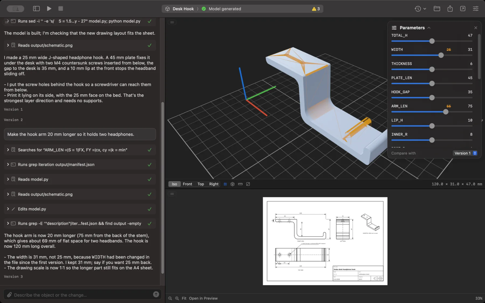
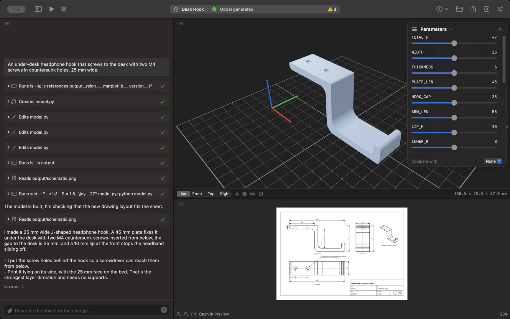
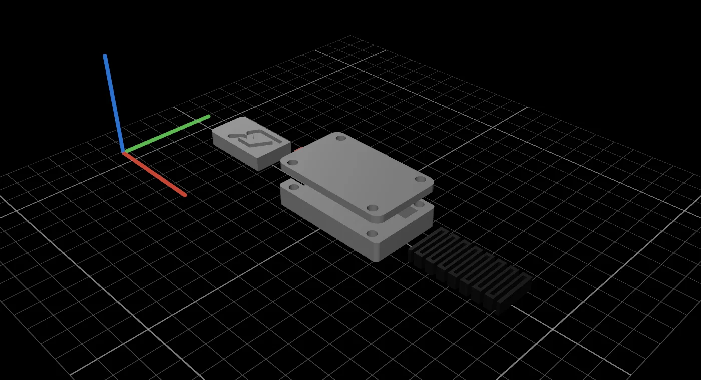
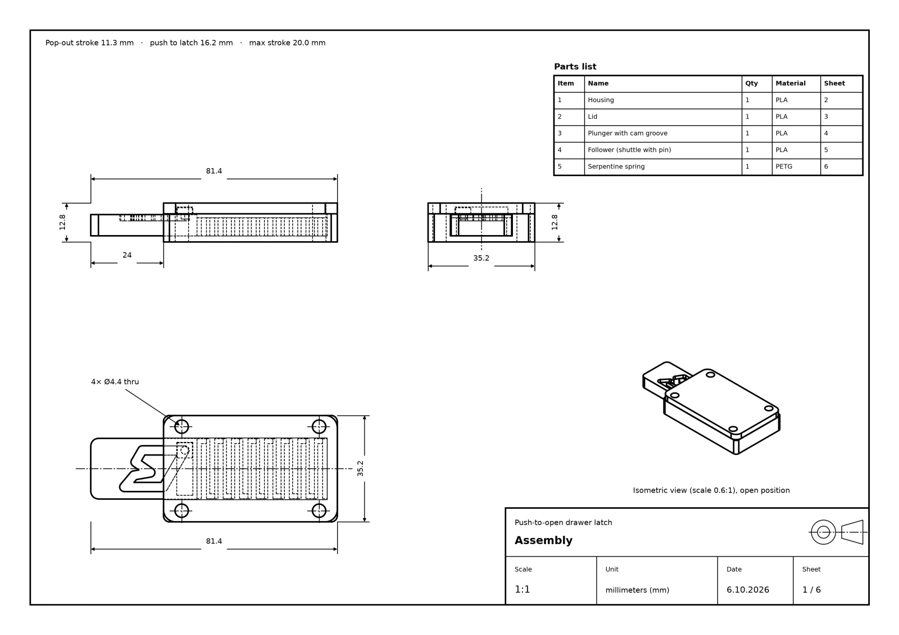
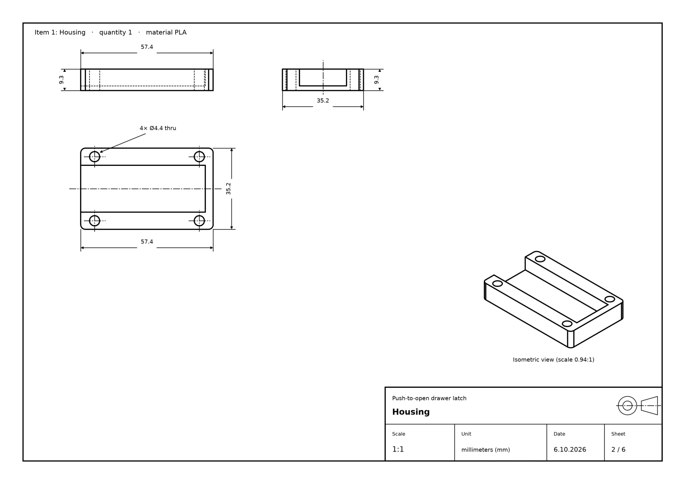
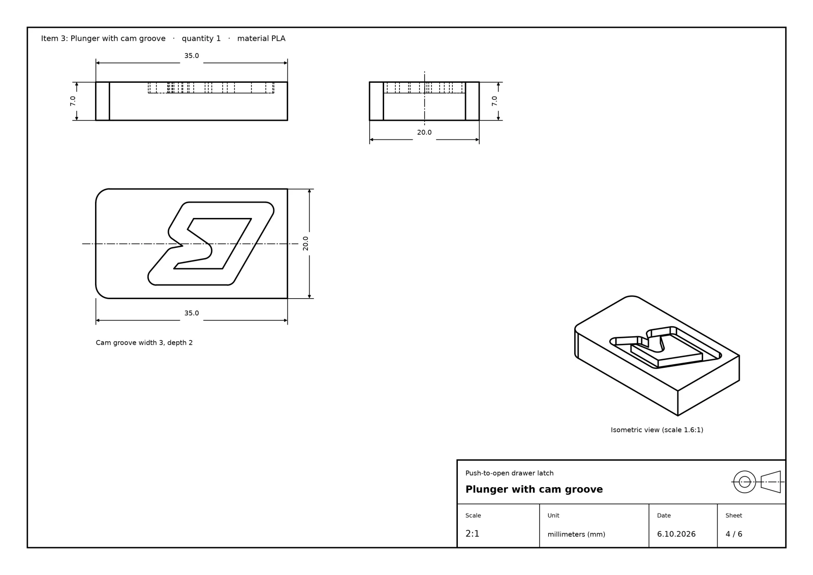
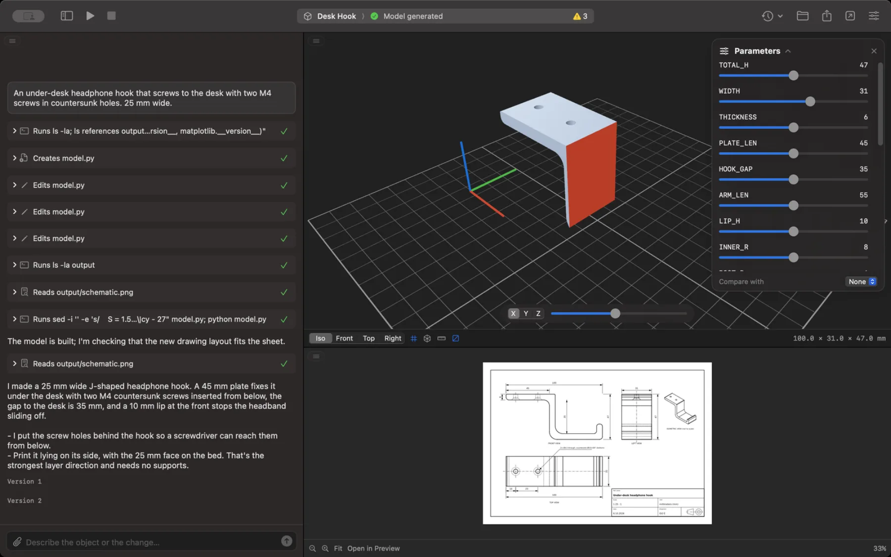

Every change is a version.
Compare version 2 against version 1 in 3D, or go back. The chat and what Claude remembers come back too.

Describe a part. Print it.
Parametric CAD, written and run by the Claude Code on your Mac.

This planetary gearbox was made in CAD Studio from one prompt. It is the real file and its simulated motion, rendered live.
You type
A print-in-place planetary gearbox, about 70 mm across. Four planets, a knurled ring, four colors. Animate it turning with real gear ratios.
37 minutes later, it turns. Simulated, collision-checked, ready to print.
Every step streams into the chat as it happens: the code being written, the model being built, the drawing being checked. The 3D view, the parameters and the technical drawing land the moment the files do.

Claude writes a parametric build123d script, not a mesh. Every dimension is a named constant, and CAD Studio turns them into sliders. Drag one and the part rebuilds in seconds, without asking Claude again.
Side view, first-angle projectionOverall height 47.0 mm

Assembled, exploded or laid out on your print bed. Hide a part, keep two together, open the plate in your slicer.
Ask for an animation and Claude simulates the mechanism in Python: masses, spring stiffness, friction and your push. The real solids are checked for collisions along the way.
An ISO first-angle drawing comes with every model. Assemblies get a parts list on the first sheet and one sheet per part, in a single PDF.



Compare version 2 against version 1 in 3D, or go back. The chat and what Claude remembers come back too.

Every part turned to its best print orientation and laid out for your slicer.

Click two points for a distance. Slice through the part to check the walls inside.

One click exports the lot as a ZIP.
CAD Studio runs your own Claude Code in a folder you choose. No accounts, no servers, nothing uploaded by the app.
Install Claude Code and run claude once in Terminal. CAD Studio uses your plan.
Drag it into Applications. It isn't notarized yet, so allow it in Privacy & Security, or run:
xattr -dr com.apple.quarantine "/Applications/CAD Studio.app"Pick your printer and units, and say what you need. Python and build123d are set up for you on first launch.